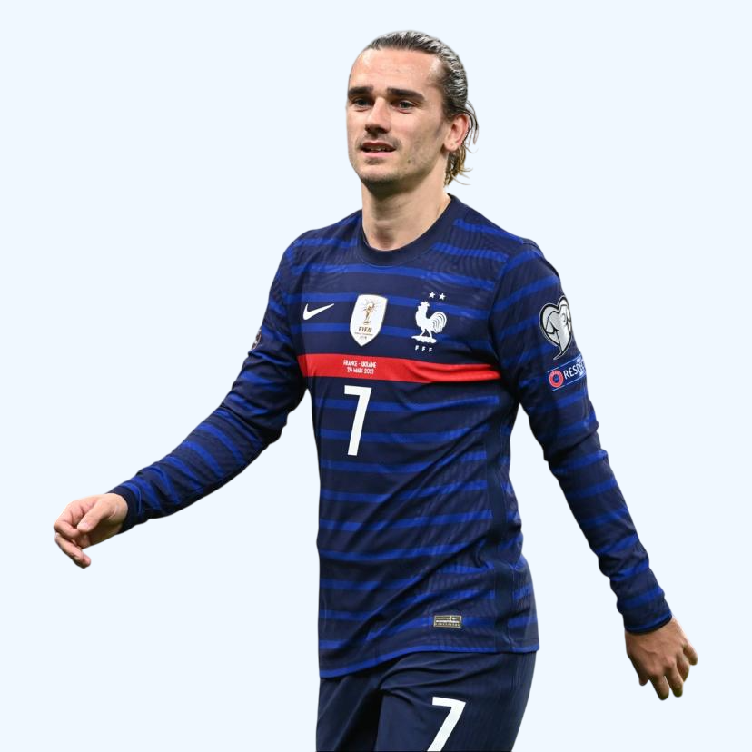

Date de naissance :
21/03/1991

Antoine Griezmann
Football
Lieu de naissance :
Mâcon
Meilleure place au Ballon d'or :
3ème position
Nombre de matchs
778
Buts :
302
Passes décisives
118
Biographie
Origines & débuts
Antoine Griezmann est né le 21 mars 1991 à Mâcon, en Saône-et-Loire.
Très jeune, il se passionne pour le football et intègre un club local avant de rejoindre en 2005 le centre de formation de Real Sociedad, en Espagne.
Après plusieurs années en équipe de jeunes, il fait ses débuts professionnels avec Real Sociedad en 2009–2010.
Real Sociedad (2009–2014)
Griezmann gagne progressivement sa place dans l’effectif. Lors de la saison 2013–2014, il explose en marquant 16 buts en Liga et 20 buts au total toutes compétitions confondues.
Il se révèle comme un attaquant polyvalent, capable de jouer ailier ou en attaque de pointe, et attire l’attention de clubs plus prestigieux.
Atlético de Madrid (dès 2014)
En 2014, Griezmann signe à l’Atlético. Il devient rapidement un élément central, enchaînant les saisons avec 20+ buts.
Avec l’Atlético, il remporte plusieurs titres : la Supercoupe d’Espagne (2014), l’UEFA Europa League 2018, la UEFA Super Cup 2018, entre autres.
Passage au FC Barcelone (2019–2021)
En 2019, après le paiement de sa clause libératoire, Griezmann rejoint le Barça.
Il y remporte un titre notable : la Copa del Rey 2021.
Retour à l’Atlético Madrid (depuis 2021)
En 2021, Griezmann retourne à l’Atlético — d’abord en prêt, puis définitivement.
En septembre 2025, il atteint un nouveau jalon historique : il dépasse les 200 buts sous le maillot de l’Atlético.
Carrière en sélection nationale
Griezmann fait ses débuts avec l’Équipe de France de football le 5 mars 2014, contre les Pays-Bas.
Il marque son premier but pour les Bleus le 1er juin 2014, contre le Paraguay.
Il joue un rôle central chez les Bleus pendant près de 10 ans. En 2024, il compte 137 sélections et 44 buts pour la France.
Dans les grands tournois :
- UEFA Euro 2016 : il se distingue comme meilleur joueur du tournoi et meilleur buteur pour la France.
- Coupe du Monde de la FIFA 2018 : il contribue au sacre mondial des Bleus.
- UEFA Nations League 2021 : encore un trophée remporté avec la sélection.
À l’automne 2024, il annonce mettre un terme à sa carrière internationale, après une décennie en Bleu.
Succès & Accomplissements
Coupe du Monde (x1)
Coupe du Monde 2018
Match : France vs Croatie
Score 4-2.
Griezmann marque le 2ème but des Bleus et permet de décrocher la seconde étoile.
Ligue des Nations (x1)
Ligue des Nations 2020-2021
Match : Espagne vs France
Score 1-2.
La France remporte la première Ligue des Nations de son histoire.
Ligue Europa (x1)
UEFA Europa League 2018
Match : Atlético Madrid vs Olympique de Marseille
Score : 3-0.
Griezmann inscrit un doublé lors de cette finale, ce qui fait de lui un acteur déterminant du sacre.
Super Coupe d'Europe (x1)
UEFA Super Cup 2018
Match : Atlético Madrid vs Real Madrid
Score 4-2 : après prolongations.
Coupe du Roi (x1)
Coupe du Roi 2021
Match : Athletic Bilbao vs FC Barcelone
Score 0-4.
Griezmann guide son équipe vers la victoire en inscrivant le premier but de la rencontre.
Super Coupe d'Espagne (x1)
Super Coupe d'Espagne 2014
Match : Real Madrid vs Atlético Madrid
Score : 1-2 au cumul des deux matchs.